Aktuálna ponuka
Nehnuteľnosti, ktoré ponúkam
12 nehnuteľností na predaj a prenájom. Vyberte typ, alebo napíšte lokalitu.
12 z 12 ponúk
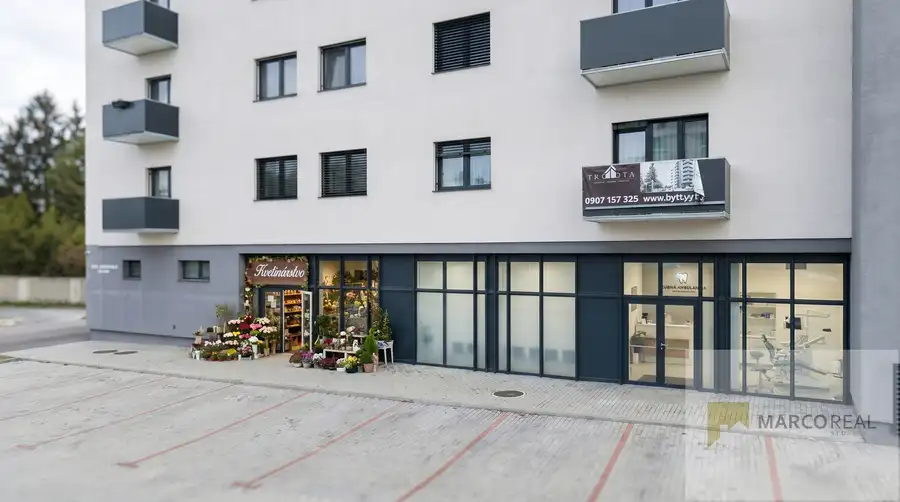
Komerčné priestoryNové10 1 800 €PREDAJ obchodných priestorov vo VRBOVOM v novostavbe TRIKOTA, výmera 71,3 m2 , 141,8 m2, 254,3 m2 Vrbové 71.3 m² Ponúkame Vám na predaj komerčné a prevádzkové priestory vo Vrbovom na ul. Jána Zigmundíka v novostavbe TRIKOTA. Sú situované na prízemí bytového domu…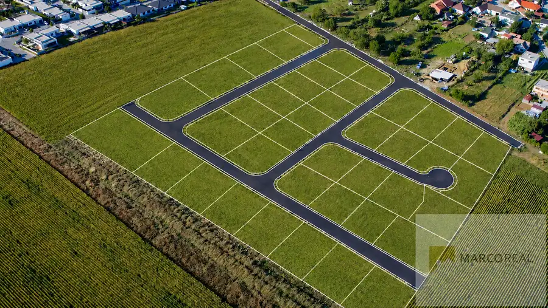
PozemokNové9 115 400 €STAVEBNÝ POZEMOK v obci ZVONČÍN len 8 km od Trnavy, výmera 577 m2, všetky IS Zvončín 577 m² Ponúkame Vám na predaj stavebný pozemok pre výstavbu rodinného domu v obci Zvončín v novej lokalite HORNÉ POLE len 8 km od Trnavy, veľkosť pozemku…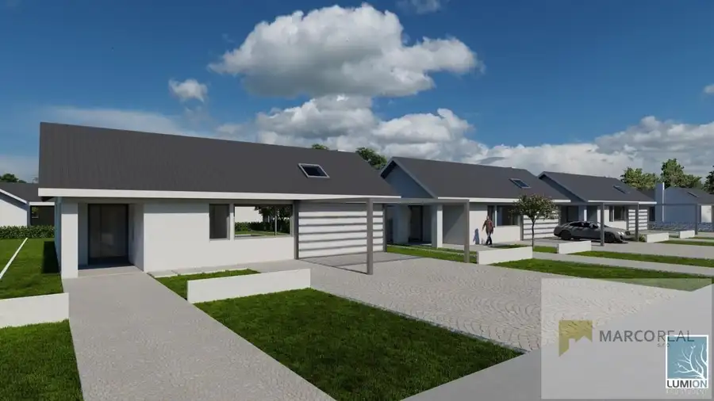
Dom9 279 900 €KRÁSNA 4-izbová NOVOSTAVBA RD v novej lokalite SADOVÁ v ZAVARE, zastavaná 160 m2, pozemok 653 m2 Zavar 140 m² Ponúkame Vám na predaj 4-izbovú NOVOSTAVBU nízkoenergetického RD v obci ZAVAR kúsok od Trnavy, zastavaná plocha 160 m2, úžitková plocha 140 m2,…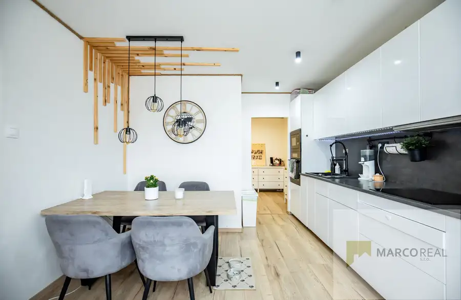
Byt10 207 000 €Krásny 4-izb. byt v obci Cífer kúsok od Trnavy, o výmere 87,5 m2, loggia 3,9 m2, záhradka, garáž, kompletná rekonštrukcia Cífer 4-izbový87 m²2. podlažie Ponúkame Vám na predaj veľmi pekný 4-izbový byt s loggiou v obci Cífer len 10 km od Trnavy, o výmere 87,5 m2, byt je situovaný na 2p./4p. v…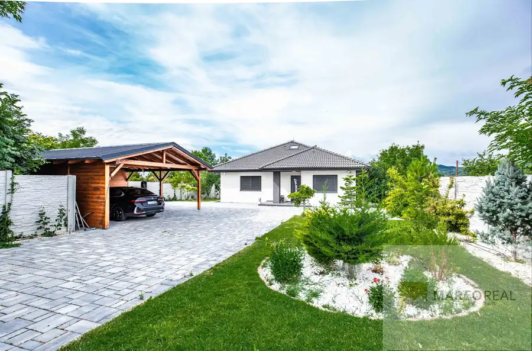
Dom10 399 000 €5-izb. NOVOSTAVBA RD v obci TRSTÍN 18 km od Trnavy, pozemok 1431 m2, výmera domu 210 m2,altánok na grilovanie, jazierko s výhľadom na Smolenický zámok Trstín 210 m² Ponúkame na predaj výnimočnú 5-izbovú novostavbu rodinného domu, ktorá spája modernú architektúru, kvalitné materiály a vysoký štandard bývania. Dom…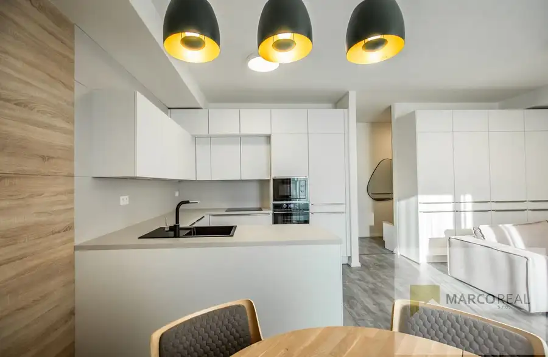
Byt10 163 000 €3-izbový byt typ ,,f" v nadštandartnej novostavbe trikota vo Vrbovom, 71,26 m2, balkón 2,21 m2, kobka Vrbové 3-izbový71.26 m²6. podlažie Vyberte si Vaše nové bývanie v modernom NADŠTANDARTNOM PROJEKTE TRIKOTA vo Vrbovom, tento rezidenčný projekt prináša ponuku 44 bytov na ôsmich…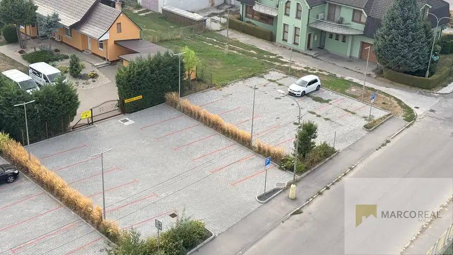
Komerčné priestory6 6 000 €PARKOVACIE MIESTO NA PREDAJ - pred bytovým domom TRIKOTA vo Vrbovom, výmera 12 m2 a 13 m2 Vrbové 12 m² Ponúkame na predaj parkovacie miesta na ulici J. Zigmundíka vo Vrbovom, situované pred bytovým domom TRIKOTA. Jeho veľkou výhodou je komfortné…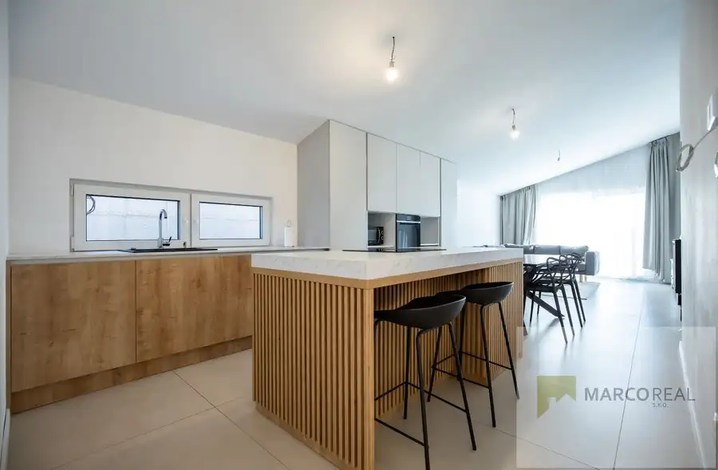
Dom10 249 000 €4-izb. NOVOSTAVBA RD v obci ŽLKOVCE kúsok od Trnavy, pozemok o výmere 844 m2, klimatizácia Žlkovce 92 m² Ponúkame Vám na predaj 4-izbovú NOVOSTAVBU RD v obci ŽLKOVCE cca 15 km od Trnavy, zastavaná plocha 122 m2, úžitková plocha 92 m2, pozemok o výmere…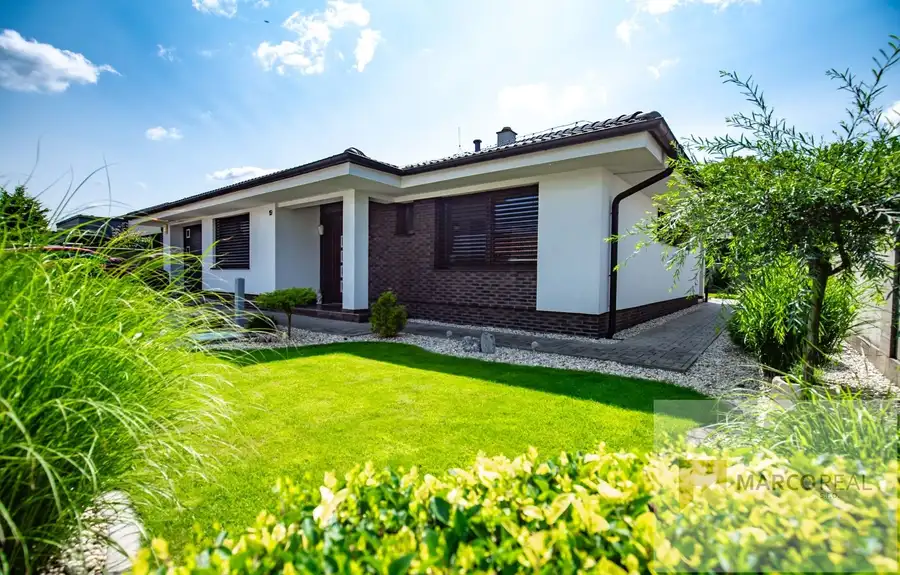
Dom10 535 000 €Krásna 4-izb. NOVOSTAVBA RD na ul. OSKARA ČEPANA v Trnave, pozemok 595 m2, výmera domu 161,8 m2, zariadený Trnava 161.8 m² Ponúkame Vám na predaj krásnu 4-izbovú NOVOSTAVBU RD v Trnave na ul. OSKARA ČEPANA v lokalite Kamenný Mlyn, zastavaná plocha 185 m2, úžitková plocha…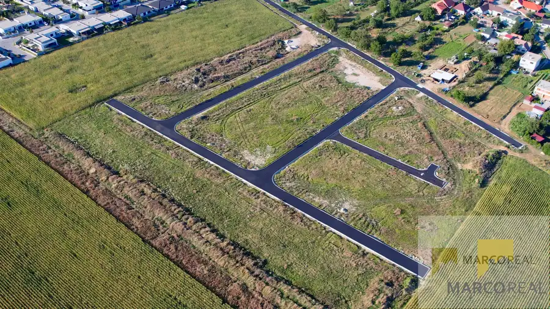
Pozemok3 111 900 €STAVEBNÝ POZEMOK v obci ZVONČÍN len 8 km od Trnavy, výmera 561 m2, všetky IS Zvončín 561 m² Ponúkame Vám na predaj stavebný pozemok pre výstavbu rodinného domu v obci Zvončín v novej lokalite HORNÉ POLE len 8 km od Trnavy, veľkosť pozemku…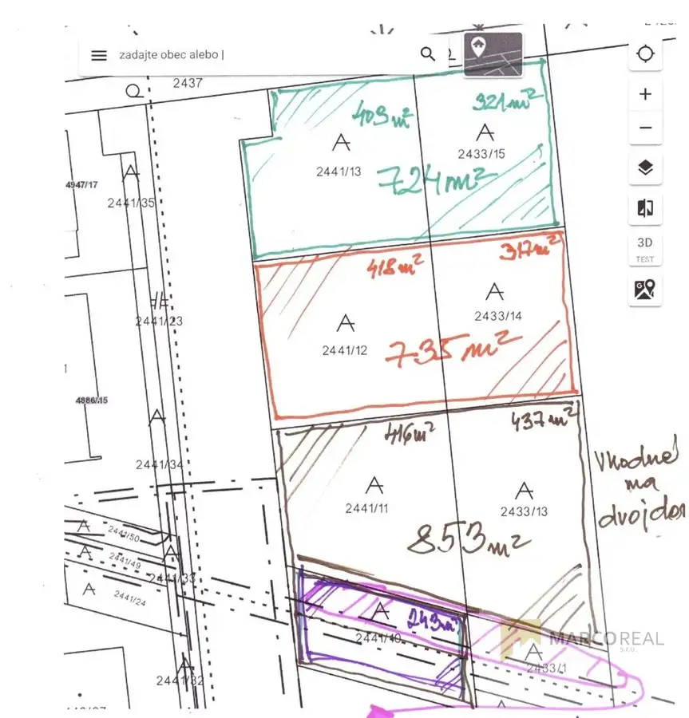
PozemokNové2 Cena dohodouStavebné pozemky v meste Sereď, výborná dostupnosť na D1 a R1, smer Trnava, Bratislava, Nitra, všetky siete k dispozícii Sereď 724 m² Ponúkame Vám na predaj stavebné pozemky na výstavbu RD v novovybudovanej lokalite v meste Sereď, mimo hlavnej cesty, prístup z betónovej cesty,…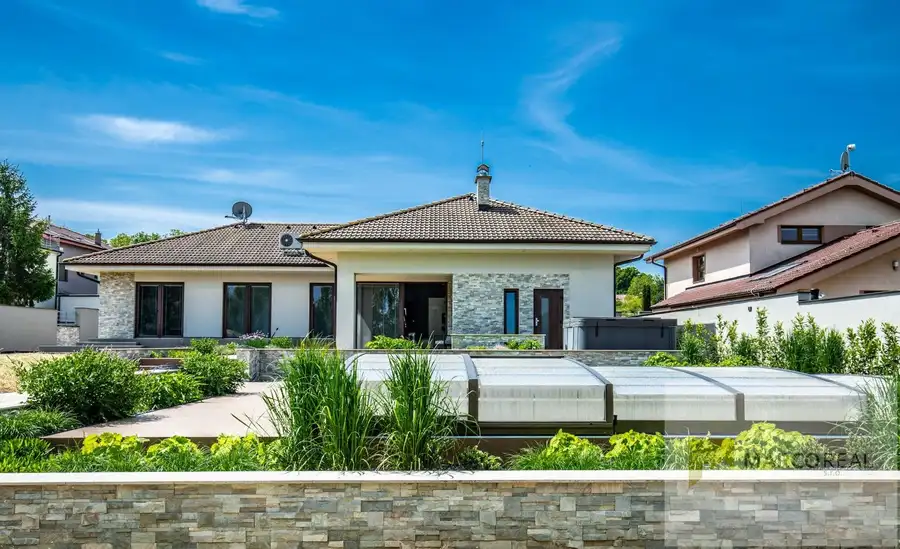
DomRezervované10 480 000 €4-izb. NOVOSTAVBA RD v obci KOŠOLNÁ len pár minút od Trnavy, pozemok 1362 m2, výmera domu 185 m2,prekrytý bazén so slanou vodou, vírivka Košolná 185 m² Ponúkame Vám na predaj moderný a priestranný 4-izbový RD v tichej časti obce Košolná len 11 km od Trnavy, zastavaná plocha 234 m2, úžitková plocha…Tomuto výberu zatiaľ nezodpovedá žiadna ponuka. Napíšte mi, čo hľadáte.